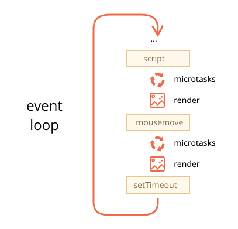

事件循环 & 任务/消息队列
JavaScript 在运行时，会有一个用于存储待处理消息的队列，这个消息可以理解为事件名，每个事件都会有一个对应的回调函数，用于处理该事件。
事件循环就决定了何时处理任务队列中的任务，它会按照事件注册的先后顺序，依次处理任务。
调用栈
函数执行时，会有函数的调用栈。事件循环处理某个任务时，会调用对应的回调函数，那么就会有对应的调用栈。直到这个调用栈为空，说明当前事件处理完成，那么就会处理下一个任务。
MDN 上有一篇讲解文章，写得通俗易懂，可以看看。

任务 & 微任务
在 JavaScript 中，任务被分为任务（Tasks）和微任务（MicroTasks）：
任务：几乎所有消息，都会被注册到任务队列（如程序初始化、事件触发的回调…），每次事件循环开始处理任务队列中的任务时，在这个时间点之后加入队列的任务只能在下一次事件循环被处理，可以通过如下代码理解：
1
2
3
4
5
6
7const tasksQueue = []
// 异步调用该函数
function eventLoop() {
const copies = taskQueue.slice(0)
taskQueue.length = 0
copies.forEach(event => event())
}微任务：微任务会一直执行，直到微任务队列为空 - 即使中途有微任务加入，也就是说会在当前事件循环结束前执行完所有的微任务，可以理解为：
1
2
3
4
5
6
7const microtasksQueue = []
function eventLoop() {
if (microtasksQueue.length) {
microtask = microtasks.shift()
microtask()
}
}
浏览器的渲染线程
浏览器的渲染和 JavaScript 的执行共用同一个线程，共享事件循环。该线程用于：
- 运行网页脚本
- 管理用户和其他事件
- 渲染、绘制网页内容
所以如果脚本阻塞或者进入了死循环，那么浏览器就会假死，导致降低了用户体验。
问题
任务执行时，不会进行渲染，所以如果某个任务花费的时间太长，浏览器将无法执行其他任务，无法处理用户事件，因此一段时间后，它会发出类似“页面无响应”的警报，提示您杀死整个页面的任务。当存在大量复杂的计算或导致无限循环的编程错误时，就会发生这种情况。
解决方案
解决方案：
- 分割任务，将任务分层多个部分。如先执行前 100 个，然后为后 100 个设置 setTimeout(0)
- 使用 web workers 可以让主线程另起新的线程来运行脚本，这能够缓解上面的情况。一个设计良好的网站或应用会把一些复杂的或者耗时的操作交给 worker 去做，这样可以让主线程除了更新、布局和渲染网页之外，尽可能少的去做其他事情。
- 通过使用像 promises 这样的 异步JavaScript 技术可以使得主线程在等待请求返回结果的同时继续往下执行，这能够更进一步减轻上面提到的情况。然而，一些更接近于基础功能的代码——比如一些框架代码，可能更需要将代码安排在主线程上一个安全的时间来运行，它与任何请求的结果或者任务无关。
- 微任务是另一种解决该问题的方案，通过将代码安排在下一次事件循环开始之前运行而不是必须要等到下一次开始之后才执行，这样可以提供一个更好的访问级别。在执行任何其他事件处理或呈现或执行任何其他宏任务之前，所有微任务都已完成。